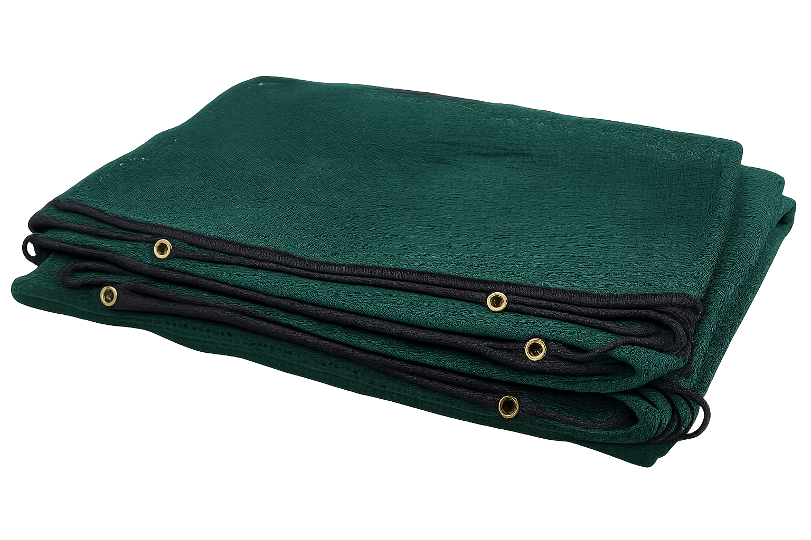
Manta de vareo
Mantas de gran formato para extender bajo el olivo y recoger la aceituna.
Disponible en la cooperativaSuministramos a nuestros socios y al agricultor de la zona. Disponibles para compra directa en la cooperativa.
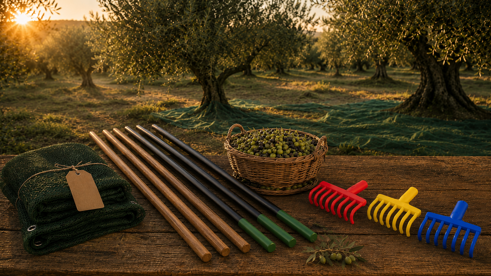
Todo lo necesario para la recogida tradicional de la aceituna.

Mantas de gran formato para extender bajo el olivo y recoger la aceituna.
Disponible en la cooperativaRastrillo manual para terminar de bajar la aceituna y agruparla.
Disponible en la cooperativa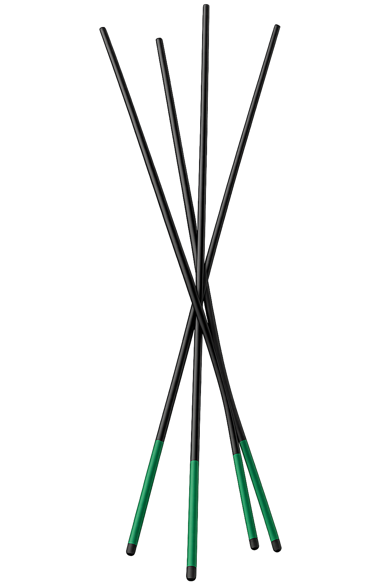
Varas de distintas medidas para el vareo tradicional.
Disponible en la cooperativa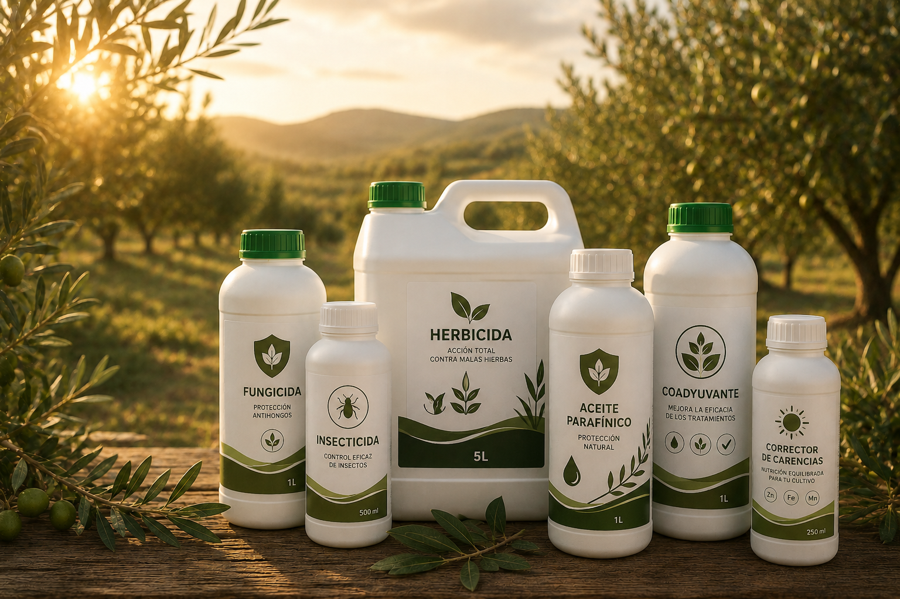
Productos para el tratamiento de plagas y enfermedades del olivar.
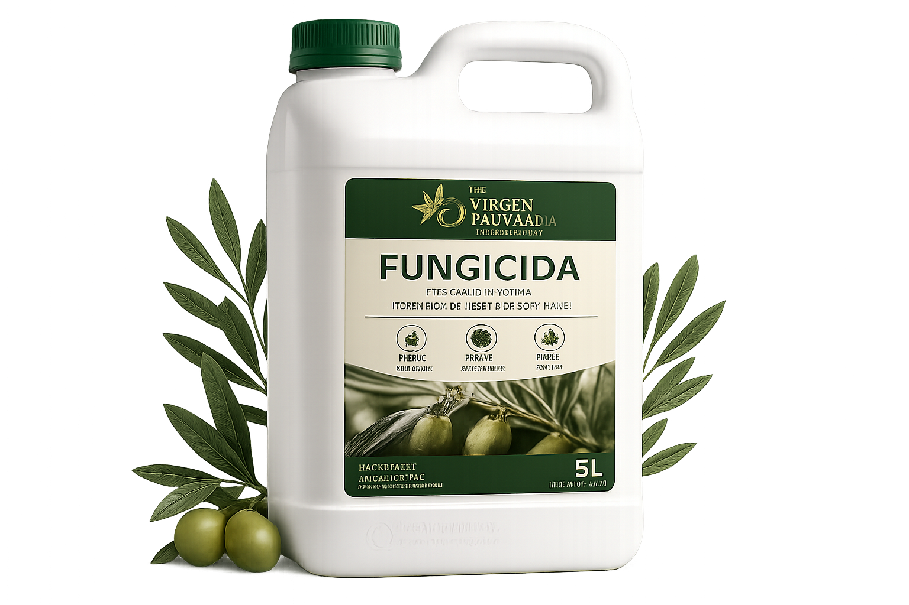
Tratamientos contra hongos y enfermedades fúngicas.
Disponible en la cooperativa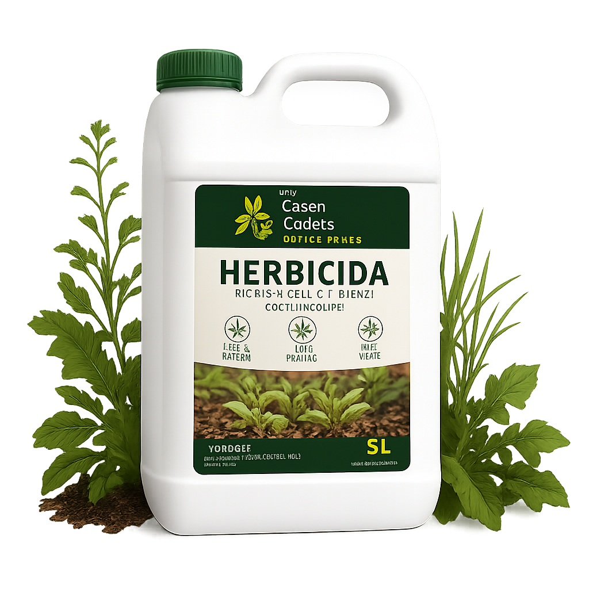
Control de hierbas competidoras del olivar.
Disponible en la cooperativa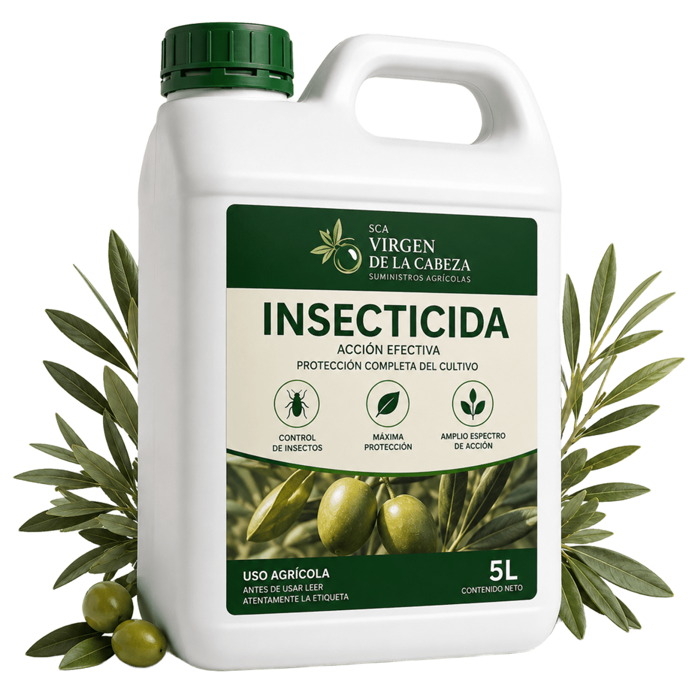
Para plagas comunes como mosca del olivo, polilla y prays.
Disponible en la cooperativa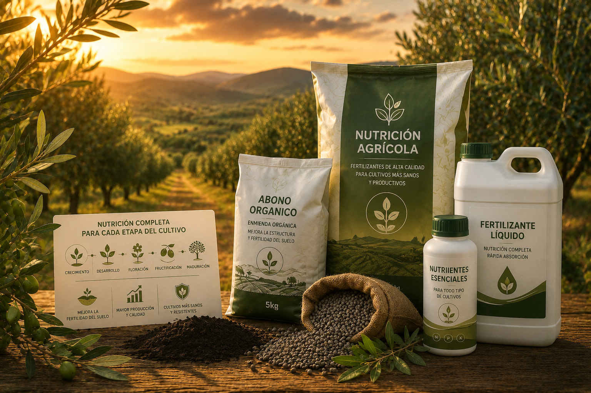
Abonos y fertilizantes para mantener el vigor del olivar.
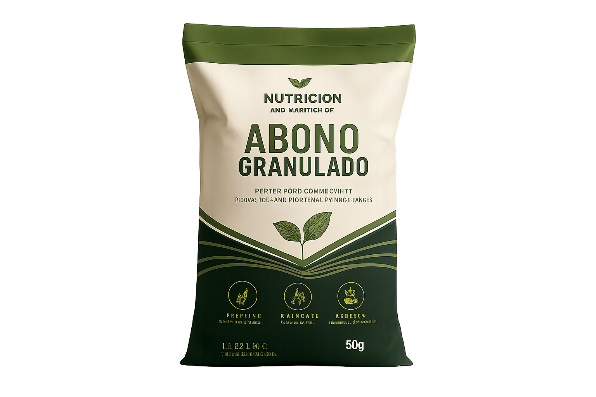
Abonos orgánicos y minerales para fertilización de fondo.
Disponible en la cooperativa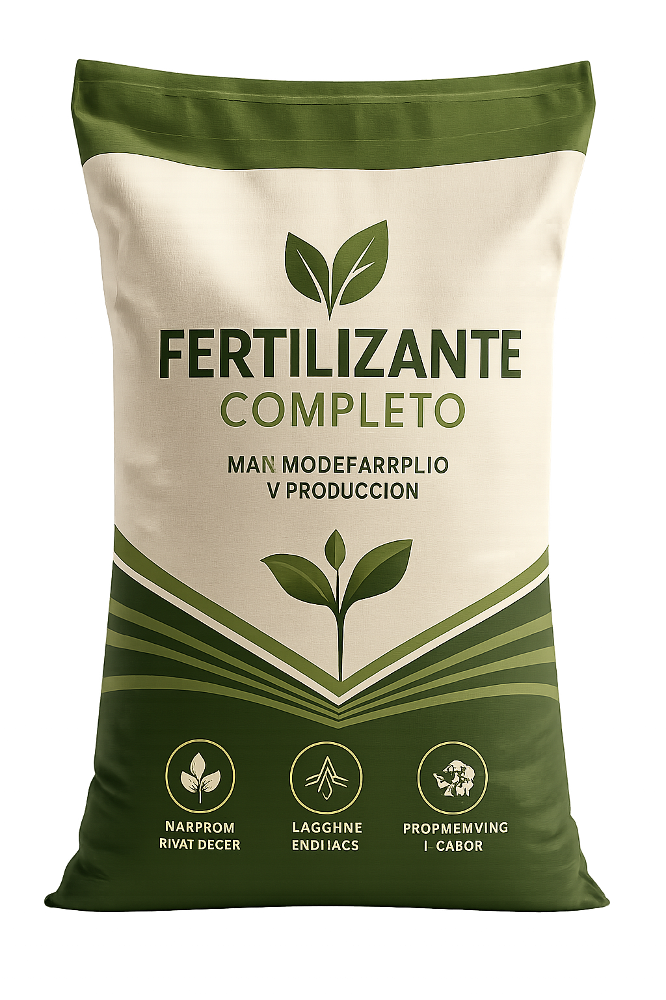
Fertilizantes específicos para olivar adulto y plantaciones jóvenes.
Disponible en la cooperativa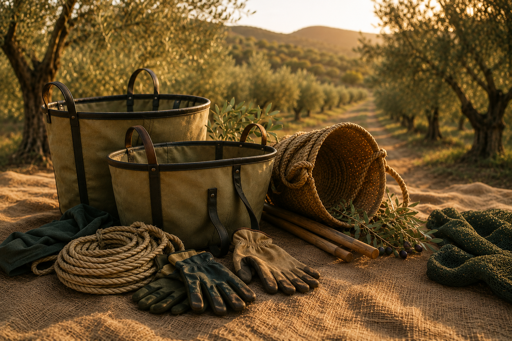
Material complementario para el trabajo en el campo.
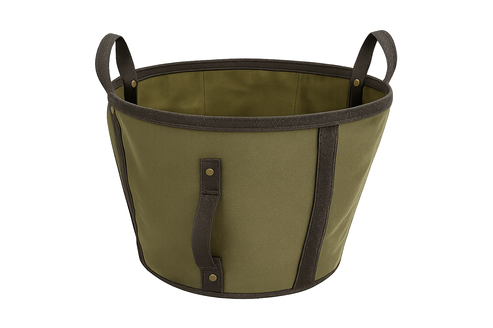
Capazos de distintos tamaños para recolección manual.
Disponible en la cooperativaGuantes resistentes para faenas del campo.
Disponible en la cooperativaPiezas y componentes para mantenimiento de maquinaria agrícola común en el olivar.
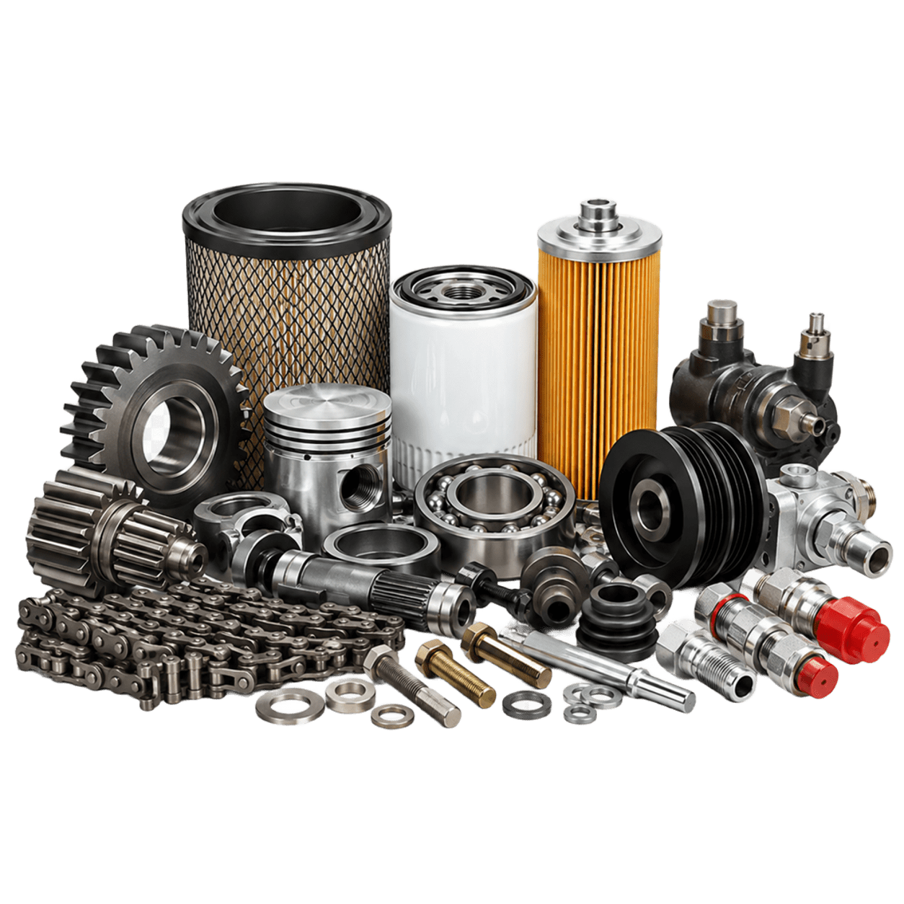
Pasa por la cooperativa para consultar disponibilidad de piezas específicas.
Disponible en la cooperativaPásate por la cooperativa o llámanos. Atendemos en horario de almazara y campaña.